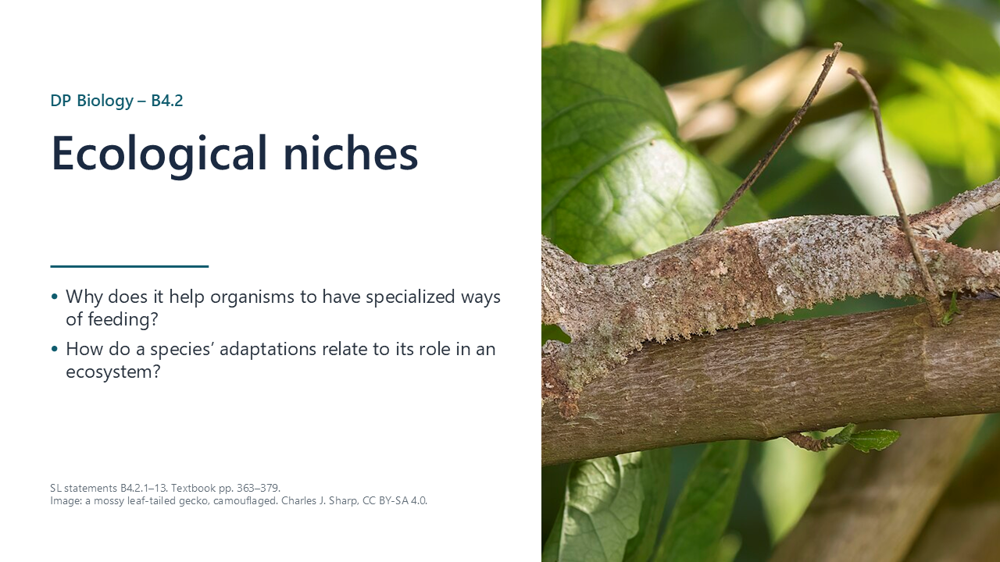
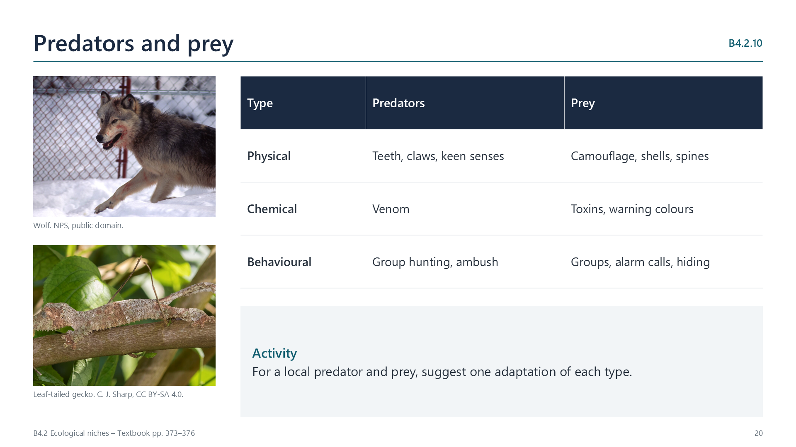
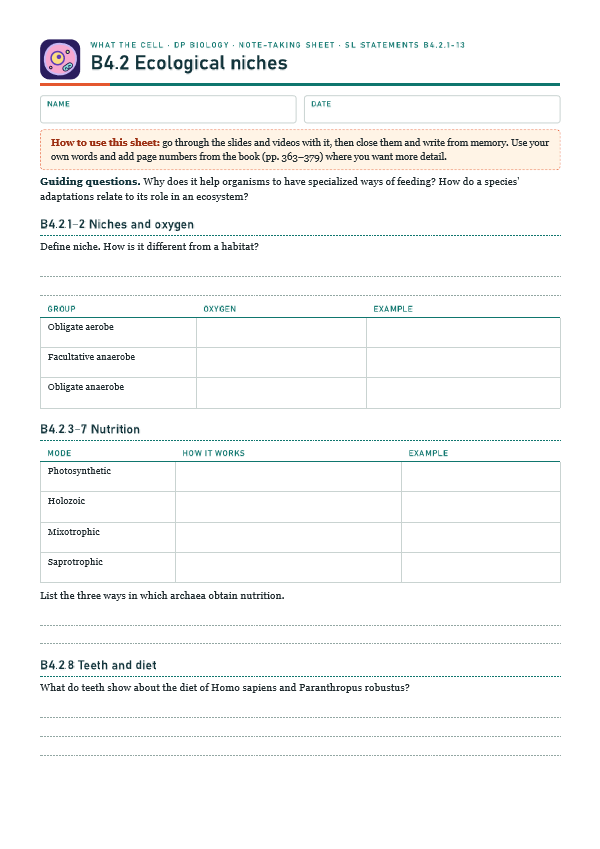
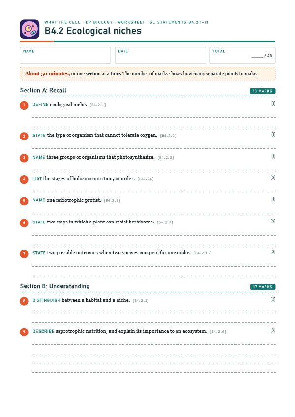

A niche is a species' role in an ecosystem
pp. 363–364A niche includes the biotic and abiotic interactions that influence growth, survival and reproduction, including how a species obtains food.

Written for this site from the class slides, with textbook page references for each statement. The chapter is on pages 363–379 of the course textbook. Image credits are on slide 35.
A niche includes the biotic and abiotic interactions that influence growth, survival and reproduction, including how a species obtains food.
| Group | Oxygen | Example |
|---|---|---|
| Obligate aerobe | Needed | Most animals and plants |
| Facultative anaerobe | Tolerated, but not needed | Yeast, E. coli |
| Obligate anaerobe | Not tolerated | Clostridium tetani |
Plants, eukaryotic algae and several groups of prokaryotes, including cyanobacteria, photosynthesize.
All animals are heterotrophs, and most are holozoic. Food is ingested, digested internally, absorbed and assimilated.
Mixotrophs both photosynthesize and feed. Euglena is a freshwater example, and many others live in ocean plankton. Facultative mixotrophs can use either mode, whereas obligate ones need both.
Many fungi and bacteria secrete enzymes onto dead matter and absorb the products. They are also called decomposers.
Archaea are one of the three domains of life. They include photosynthetic, chemosynthetic and heterotrophic organisms, and many live in extreme environments.
Teeth show diet. Paranthropus robustus had very large, flat molars and strong jaws, suited to tough plants. Homo sapiens has small, flat teeth that suit a mixed diet. Homo floresiensis had large premolars and a strong jaw, and tooth wear suggests a mainly tough plant diet with some meat.
Leaf-eating insects have chewing or piercing mouthparts. Plants resist with spines, stings and toxic secondary compounds in seeds and leaves. Some herbivores have metabolic adaptations that detoxify these substances: the proboscis monkey has gut bacteria that neutralize toxins in the leaves it eats.

Predators and prey both have chemical, physical and behavioural adaptations for finding, catching and killing prey, or for resisting predation.
Trees grow up to the canopy. Lianas climb on them, epiphytes grow on their branches, and strangler figs begin high up and send roots down. Shade-tolerant plants survive in low light on the forest floor.
A fundamental niche is the potential of a species, based on adaptations and tolerance limits. A realized niche is its actual extent when it competes with other species.
Each species has a unique niche. If two species compete, one may be eliminated, or both may be restricted to part of their fundamental niche. Gause showed this in 1934: grown together, Paramecium aurelia excluded P. caudatum.
Select a video to play it here. Select it again to close it.
Print this guide and complete it as you work through the slides and videos. It asks for your own explanations, so close the notes while you try each section.

The self-check needs JavaScript to run.
A printable worksheet covering all thirteen statements, from quick recall to data questions and a longer answer. It has 48 marks and takes about 50 minutes, or you can do one section at a time.
Your teacher has the mark scheme.

Questions built on realistic experimental data, in the style of Paper 1B and Paper 2. Work them on paper and show your working. 6 marks in total. Your teacher has the mark scheme.
In many birds of prey, females are larger than males. The mean body mass of males and females of four North American hawks was compared with the mean mass of the prey they caught.
| Species | Male mass / g | Female mass / g | Male prey mass / g | Female prey mass / g |
|---|---|---|---|---|
| Sharp-shinned hawk | 100 | 170 | 20 | 30 |
| Cooper’s hawk | 280 | 440 | 60 | 120 |
| Northern goshawk | 900 | 1300 | 300 | 500 |
| Red-tailed hawk | 1000 | 1200 | 150 | 180 |
You will need: Leaves from the sunny and shaded sides of one plant, graph paper, ruler
Safety: Avoid plants that irritate skin, and wash hands afterwards.
Carry this out with your teacher's supervision and follow your school's lab rules.
Gause's experiments on Paramecium in 1934 showed that two similar competitors could not stably coexist, supporting competitive exclusion.
A flask is far simpler than an ecosystem. Consider what is gained and lost by simplifying a system to study it.
Predict first, then check. Each one opens on the Think deeper pages.
Summarised in our own words. Use each code to find the exact wording in your textbook or the IB subject guide.
B4.2 has no HL-only content. SL and HL students learn the same material here.
© 2026 Akash Parthi Bendran. Please ask before using or sharing any resources from this site: see permission to use.